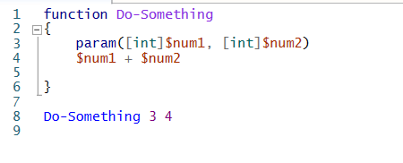

Powershell'in kendisine ait bir script ortamı vardır.
FUNCTIONS:

Do-Something -num1 3 -num2 4 → Bu şekilde de tanımlayabilirsin.
Güzel bir fonksiyon örneği: Bu fonksiyon bir klasörün kaç gb yer kapladığını görmemizi sağlar!!
function GetDirInfo($dir)
{
Get-ChildItem $dir -Recurse | Measure-Object -Property length -Sum
}
[math]::round(GetDirInfo D:/PowerShellApplications).Sum/1GB,6)
Bu da script haline getirilmiş hali:
#Parameters:
param([string]$dir = 'D:/python')
#Functions:
function GetDirInfo($dir)
{
$result = Get-ChildItem $dir -Recurse | Measure-Object -Property length -Sum
return [math]::round(($result).Sum/1GB,6)
}
#Main Processes:
$value = (GetDirInfo $dir)
echo "Value is : $value"